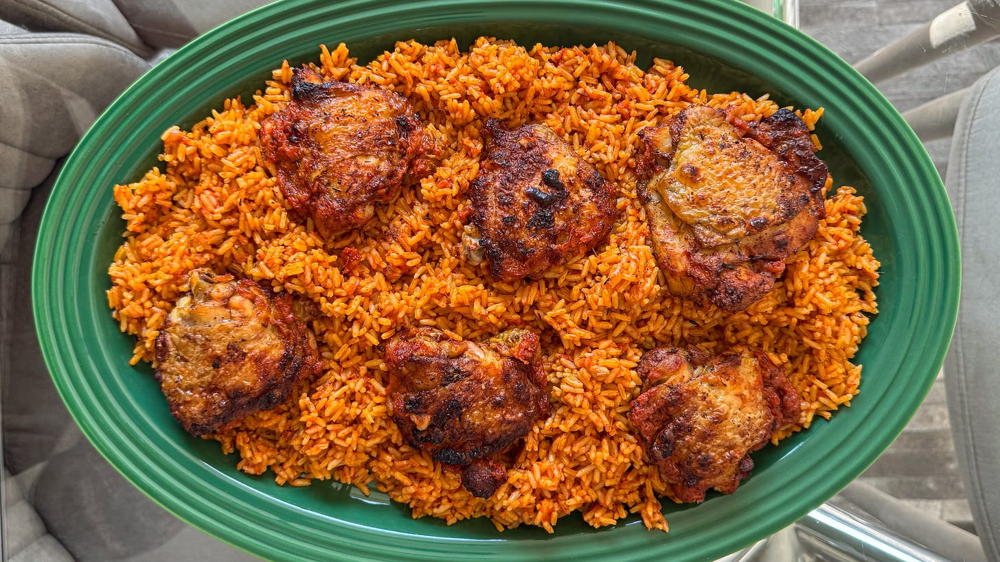

Jollof Recipe

Description
this is a tasty plate of ghana jollof
Ingredients
- 2 cups of rice
- 3 blended tomatoes
- 2 tablespoon tomato paste
- 1 onion (chopped)
- 2 cups chicken stock
- 1 tsp curry powder
- 1 tsp thyme
- Salt to taste
- Vegetable oil
- Chicken or beef (optional)
Steps
- Heat oil in a pot and fry onions.
- Add tomato paste and blended tomatoes. Cook for 10–15 minutes.
- Add curry, thyme, salt, and stock.
- Pour in washed rice and stir.
- Cover and cook on low heat for about 25 minutes.
- Stir occasionally until the rice is soft.